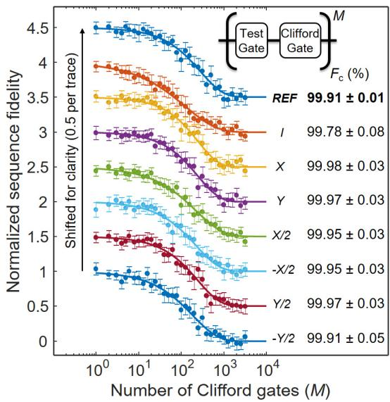
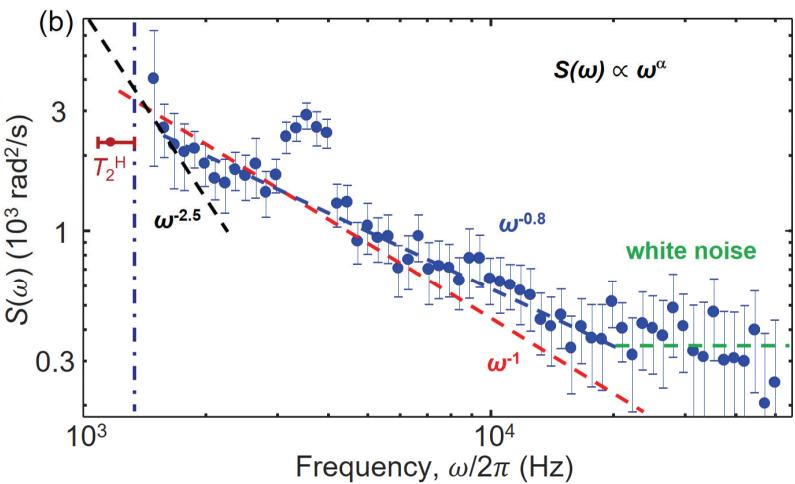
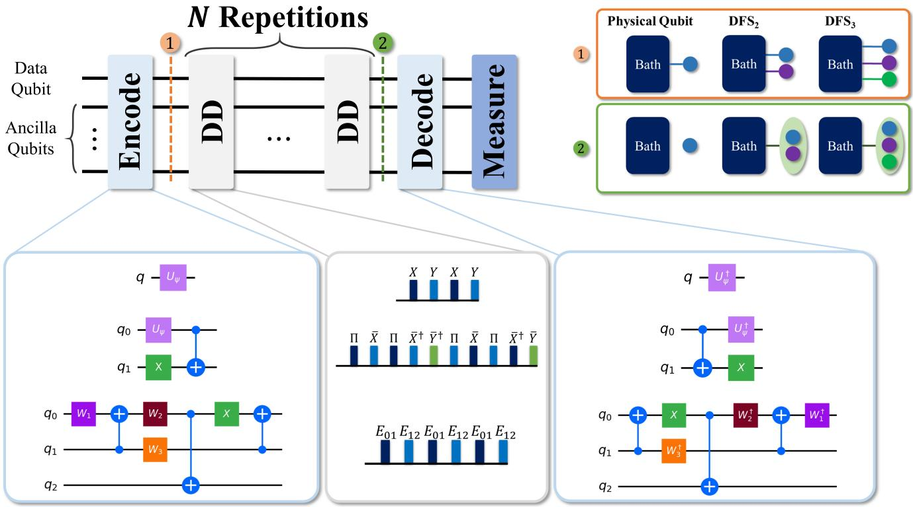
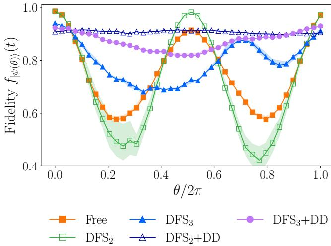

物理图像与历史脉络
动力学解耦（dynamical decoupling，DD）起源于核磁共振：1950 年 E. Hahn 在 量子点等固态自旋体系中流行的”Hahn 回波”序列（Ramsey + 中点 脉冲）已经证明，只要噪声在两次自由演化中保持近似不变，前后段累积的相位可以互相抵消；1958 年 H. Y. Carr 与 E. M. Purcell 提出在演化中插入多个 脉冲提高对快噪声的抑制，后由 S. Meiboom 与 D. Gill 改进为绕 轴施加脉冲的 CPMG（Carr–Purcell–Meiboom–Gill）序列，从而避免 脉冲面积误差累积。这一思路在 1990 年代被 L. Viola 与 S. Lloyd 推广到通用量子信息场景，并命名为”动力学解耦”。
在半导体量子点体系里，DD 最初被用来压制电荷量子比特的低频电荷噪声；自旋比特广泛使用之后，DD 既被作为”延长 “的工程手段，也被作为”测量噪声谱”的诊断手段（dynamical decoupling noise spectroscopy）。这里的”动力学”二字强调了脉冲由外加微波主动产生，区别于物质内禀的”自然解耦”（如自旋–电荷的某种对称点保护）。序列滤波之外还出现了”治本”路线：对可分辨的单体电荷涨落器，栅压反馈可把其低频噪声谱直接压低近一个量级（见电荷噪声词条的反馈稳定一节）——与序列层面的滤波互补。
从 Ramsey 衰衰减到回声重聚焦
考虑一个二能级量子比特在磁场失谐为 时的自由演化。Ramsey 序列 –– 让比特在赤道面上转动 的角度，再被第二个 投影到 轴。实验中测得的布居数通常用
拟合， 是微波与比特频率的失谐， 是包络衰减时间。Ramsey 对低频（准静态）噪声最敏感——任何在两次读出之间缓慢漂移的频率都会贡献随机相位——因此 通常显著短于材料的本征退相干时间 。
Hahn 回声序列 –––– 在两次演化之间插入一个绕 轴（或 轴）的 脉冲。设噪声为缓慢变化的比特频率漂移 ，则两段演化中累积的相位分别为 与 ，中间的 把后者反号；只要 在总等待时间内近似不变，，比特态在末端重新聚焦。残留的不可逆相位涨落由噪声的高频分量与脉冲面积误差贡献，因此
是常态。
噪声谱–滤波函数描述
更形式地，把比特哈密顿量写作 ，其中 由栅极电压噪声 通过电学灵敏度 耦合进来。自旋态 与 之间积累的随机相位方差为
其中 是第 个栅极对应的比特频率； 是栅极电压噪声的功率谱密度； 是脉冲序列对应的滤波函数（filter function）， 在驱动期间为 （按 翻转符号）以把”哪段演化贡献什么相位”编码进来。滤波函数分析也可以反过来指导脉冲设计：在非马尔可夫 1/f 电荷噪声模型下用 Krotov 最优控制合成的脉冲，其滤波谱在目标频段显著压低噪声权重，且对相干噪声也比常规高斯脉冲更鲁棒（见自旋退相干词条的随机噪声模型一节）。
在 Ramsey 序列里滤波函数为
对低频 近似常数。Hahn 回声则把低频 噪声”对消”，相应 在 急剧下降。CPMG- 把滤波窗口向高频推、整流更深，因而对同样的噪声 PSD 给出更小的累积相位方差， 可以比 再延长一个量级以上。
幂律噪声 下，Ramsey 与回声衰减往往呈”拉伸指数”
其中衰减指数 对应白噪声、 对应准静态 噪声、 则常见于实际体系（典型实验拟合给出 –）。这意味着 中 与 直接相关，是从数据反推噪声谱的入口。
实验落地：SiMOS 自旋比特的噪声谱学（Chan 2018）
Chan 等人把上述”CPMG=带通滤波器”的方案在 SiMOS 量子点自旋比特上完整落地（富集 ⁸⁰⁰ ppm ²⁹Si 外延、 T、 GHz、g=1.9789），把比特当成纳米电路里的噪声谱仪。操作要领：固定 脉冲间隔 、逐步增加脉冲数 直到自旋翻转概率完全衰减，对每个 用拉伸指数 提取 ，再按
换算成噪声功率谱；可用频段为 1.3–50 kHz（低频端受 限制、高频端受最短 脉冲限制）。器件的相干指标链为 s、s、s、 ms（N=7）、 ms（N=122 饱和）；RBM 给出 Clifford 门 99.83%、本征门 99.91%（IQ 矢量微波源 + ESR 频率实时反馈），保证谱学不被控制脉冲限制。

随机化基准先行：各 Clifford 门（REF/I/X/Y/±X/2/±Y/2）交错基准给出 99.83% 门保真度、本征门 99.91%——先证明控制不是瓶颈，相干时间与噪声谱学数据才有意义。图源：Chan et al. (2018), Fig. 2。
SiMOS 量子点自旋比特的噪声功率谱（CPMG 谱学，误差棒为指数拟合 95% 置信区间）：f<2 kHz 段 α=−2.5（，）；2–20 kHz 段 α=−0.8~−1 的近 1/f 电荷噪声（ 或 ）；f>20 kHz 白噪声底 350 rad²/s；f≈3.6 kHz 的尖峰经独立测量溯源到 SIM928 直流电压源（0.2 Hz–50 kHz 平均 V）。图源：Chan et al. (2018), Fig. 3。三个方法论结论值得单列：
- 谱的分区诊断：低频 段在同一低温磁体系统中的 Si:P 施主实验里系数不同（），提示该段未必是磁体线圈漂移；2–20 kHz 的近 1/f 段归为电荷噪声——量子点比施主对此更敏感，定量根源是更大的 Stark 位移（本器件 MHz/V、 MHz/V）。
- 音调注入校准：向栅极注入 20 kHz 正弦音（白底饱和频率），自旋上概率从约 起在音调频率处显著下降——与施主体系的 ~200 µVpp 相当（其噪声底低 ~35 倍）；三次（6.66 kHz）与五次（4 kHz）奇次谐波可见而偶次谐波被 CPMG 滤波函数抑制，直接验证了滤波函数描述。
- 仪器峰溯源：3.6 kHz 尖峰在施主实验中未见，对 SIM928 电压源做独立谱测量发现同频尖峰——噪声谱学能把测量电子学的缺陷定位到具体器件，指导滤波或换源。
关键序列家族
Hahn 回波
最基础的 DD 序列，仅含一个 脉冲；通常绕 轴施加以与前后两个 轴正交。优点是结构简单、对直流频移最敏感；缺点是只能压制”在 内近似不变”的低频噪声。
CPMG / XY-
CPMG- 把 个 脉冲等距插入长度为 的演化段，脉冲通常绕 轴施加。绕 轴的好处是单个 脉冲的面积误差不会沿序列累积（XY-4、XY-8 进一步把脉冲在 、 间交替以同时压制 、 两类旋转误差）。CPMG 把滤波窗口推向 量级， 越大对中高频噪声压制越深，但每多一个脉冲， 脉冲的面积误差与加热效应也累积越多，因此 通常先随 上升、再在加热或脉冲失真主导时饱和甚至回落。
CDD / UDD / 周期动力学解耦
进一步的高级序列包括 Khodjasteh–Lidar 提出的级联动力学解耦（concatenated DD，CDD），以及 G. S. Uhrig 推导的最优单轴序列 UDD（对纯 噪声， 脉冲的非等距间隔被精确算出），它们把滤波函数在更低频段也压成高阶零。半导体量子点体系中 CDD 与 UDD 较少使用，主要原因是实际噪声谱并非纯幂律、且多脉冲带来的加热代价常常超过收益；CPMG- 仍是默认选项。
与门操作融合：解耦门（DD 门）
把 DD 序列”包裹”在两比特条件相位演化（CZ）两侧，即把交换 的开启时间切成前后相等两段、中间插一个 翻转，就得到”解耦 CZ”（DCZ）门：
DCZ 不改变 CZ 自身的相位条件，但让条件演化过程中累积的低频单比特相位被 脉冲翻转、前后两段相互抵消，从而把单比特相位噪声从两比特门错误预算中显著剔除。该思路可推广到任意被”准静态”相位噪声污染的演化（如交换振荡本身的标定）。
参数与量级
下表汇总本站论文中几类典型量子点上动力学解耦实验的实测数据；不同材料、不同噪声环境下， 与 的提升幅度差异很大。
| 体系 | 比特类型 | （） | 提升比 | ||
|---|---|---|---|---|---|
| GaAs 双量子点电荷比特 | [[qubit-control/charge-qubit | 电荷比特]] | （拟合 ） | — | |
| Ge 棚顶纳米线空穴自旋 | [[qubit-control/hole-spin-qubit | 空穴自旋]] | — | ||
| Ge 棚顶纳米线空穴自旋 | 空穴自旋 | （） | — | ||
| 平面锗双量子点空穴自旋 | 空穴自旋 | （） | |||
| 平面锗双量子点空穴自旋 | 空穴自旋 | — | 较常规点提升约 | — | |
| 自然 Si/SiGe 自旋比特 Q1/Q2 | 自旋比特 | （） | — | ||
| Si-MOS 自旋比特 | 自旋比特 | — | |||
| GaAs 自旋比特（ 引用文献） | 自旋比特 | — | （DD 后） | — | — |
补充几个本节反复引用的具体参数：
- 栅极电压灵敏度 一般 –，锗自旋比特常取 –；乘以实测噪声 PSD 的 （如锗平面器件 –）直接给出累积相位方差。
- CPMG 阶数 从 25、75 提升到 230 时， 近似线性增长，对应低频噪声投影随 系统性下降（见 图 5.8）。
- 高阶 CPMG 受微波加热限制：脉冲数太多会抬升信号本底、压缩可见度，因此”无限增大 “在实验中并不成立。
实验特征与测量
脉冲序列实施。 所有 DD 序列都需要精确控制 与 脉冲的幅度、相位与时序。最常见做法是用两台相位相干的任意波形发生器（AWG）分别产生 、 两个通道的脉冲，经叠加器合成 IQ 信号送入微波链路；相位校准误差（– 正交偏差）会直接降低 CPMG 的鲁棒性，因此常借助 Rabi 振荡品质因子 与单比特Ramsey 进行预校准。
拟合模型选择。 拉伸指数 比简单指数更接近真实数据：当 时退化为白噪声极限， 时退化为准静态极限，中间值则提示混合噪声谱。拟合时应让 与 同时自由拟合，再用 电荷噪声 模型的 PSD 形状交叉检验。
1/f 拟合。 在锗空穴体系中把 CPMG 序列下测得的不同 对应 与 Ramsey 数据联合拟合，得到噪声 PSD 满足 （Hahn-echo 的拟合给出 ），并由此重建覆盖 – 的功率谱密度曲线。这种”序列扫描 → 滤波函数已知 → 反演 PSD”的做法即所谓 DD 噪声谱学（dynamical decoupling noise spectroscopy）。
门操作中的解耦。 在两比特门实现里，可以把 Hahn 回波波形套在 CZ（CPhase）演化外侧——即 DCZ 门：在 –––– 的”骨架”内，将中间的 – 自由演化替换为对称点处 的两次开启/关闭，从而在 演化期间执行条件相位，同时用 翻转压制单比特低频相位噪声。
失败模式与诊断。
- 拉伸指数 偏离预期（过大或过小），提示脉冲失真或测量带宽外的额外噪声通道。
- 随 上升后回落，是微波加热的指纹：测量信号本底抬升、可见度下降、拟合误差迅速放大。
- 而非显著延长，说明噪声并非”准静态”，而是脉冲间隔内变化剧烈——通常意味着电学线路的高频噪声或邻近电荷跳跃。
解耦与其他相干延长手段的差异
- 工作点优化：调整外磁场方向、栅压偏置使比特对电荷噪声的灵敏度最小化，本身即可延长 与 ；在锗空穴体系中已有实验找到一个最优磁场方向，使 提升约 倍、量子门集层析（GST）报告的单比特门错误率下降 50%。DD 与工作点优化并非互斥：前者对”剩余低频噪声”起作用，后者把”低频噪声到比特的耦合通道”先压缩。
- 同位素纯化：在硅中把 富集度降到 可让 上百倍延长（核自旋噪声直接被压制）；这是材料层面”消除噪声源”，而 DD 是控制层面”忽略噪声”。
- 几何量子门：几何相位门通过把累积相位只编码在演化路径的几何部分来免疫部分失谐噪声，对低频电荷噪声有效；DD 则是显式对消两段时间内的相位积累。两者可以组合使用。
- dressed-state 量子比特：把比特定义为微波修饰态（Floquet 缀饰态）可以赋予比特某些对称性，使部分噪声矩阵元消失；与 DD 同样属于”对消而非消除”思路。
动态生成无退相干子空间
解耦的更高层应用：不只压制噪声，而是主动诱导对称性生成无退相干子空间/子系统（DFS/DSS）——系统天然可能不具备支撑 DFS 的对称性，但动力学解耦的脉冲序列可以人工制造这种对称性：把信息编码到对称保护态上，集体噪声被对称性抵消。这把解耦从”被动防御”（延长 ）推广到”主动编码保护”（DFS 容错），与量子纠错形成互补的噪声对策层级。

动力学解耦诱导的 DFS：脉冲序列人工制造对称性——信息编码进对称保护态，集体噪声被对称性抵消。图源：arXiv:2402.07278，Fig. 1。

DFS 生成的实验演示：解耦序列前后编码态的保真度——对称保护下的信息存活时间显著延长。图源：arXiv:2402.07278，Fig. 2。
与其他概念的关系
- Ramsey 干涉测得的 是 DD 实验的参照： 与 的提升幅度直接体现低频、中频噪声的相对占比。
- Rabi 振荡的衰减 与 DD 测得的 、 一起构成完整的相干图景：前者反映驱动期间的相干性，后两者反映自由演化期间的相干性。
- 电荷噪声与界面缺陷是 DD 主要抑制的噪声源；DD 也常用来反推这些噪声源的 PSD 形状。
- 交换相互作用条件演化本身可以被 DD 包裹，构成 DCZ 与交换振荡的标定方法。
- 空穴自旋量子比特因强自旋–轨道耦合使比特对电场敏感，是 DD 收益最明显的比特类型之一；同时其 噪声强，DD 也是噪声谱分析的主要工具。
- cQED中的腔介导耦合同样可以使用 DD 思想延长有效相干；色散读出侧的 DD 等价于”把腔探测时间分布到多个非相邻窗口”以抑制腔 频移。
参考文献
- Chan, K. W., Huang, W., Yang, C. H., Hwang, J. C. C., Hensen, B., Tanttu, T., Hudson, F. E., Itoh, K. M., Laucht, A., Morello, A., Dzurak, A. S. Assessment of a silicon quantum dot spin qubit environment via noise spectroscopy. Physical Review Applied 10, 044017 (2018). DOI: 10.1103/physrevapplied.10.044017；arXiv:1803.01609（QAtlas 缓存：1803.01609）。